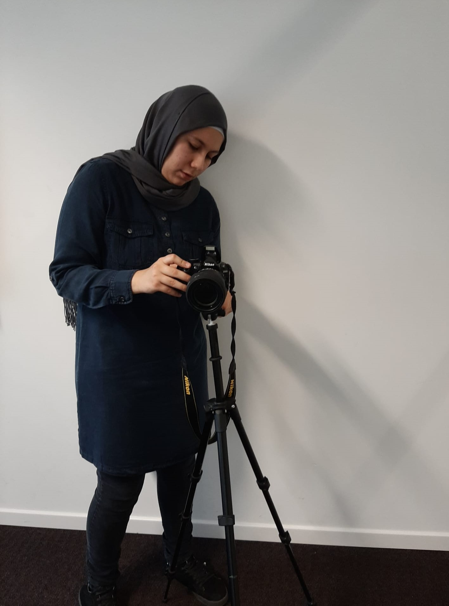

ESRA VAROL
Welkom op mijn portfolio site!
Ik ben Esra Varol en ik studeer Grafische & Digitale media aan de Artesis Plantijn Hogeschool te Antwerpen. Mijn afstudeerrichting is Crossmedia-Ontwerp, dit betekent dat ik bezig ben met video-animatie, webdesign, grafisch design, branding, illustratie en fotografie. Onder de tabblad "projecten" kunt u mijn portfolio raadplegen.
